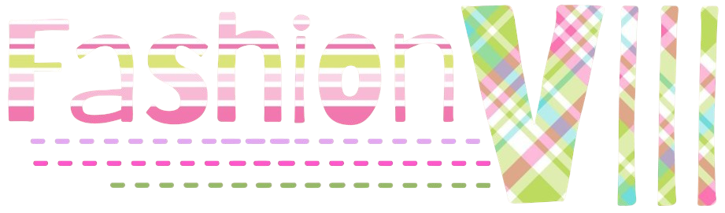
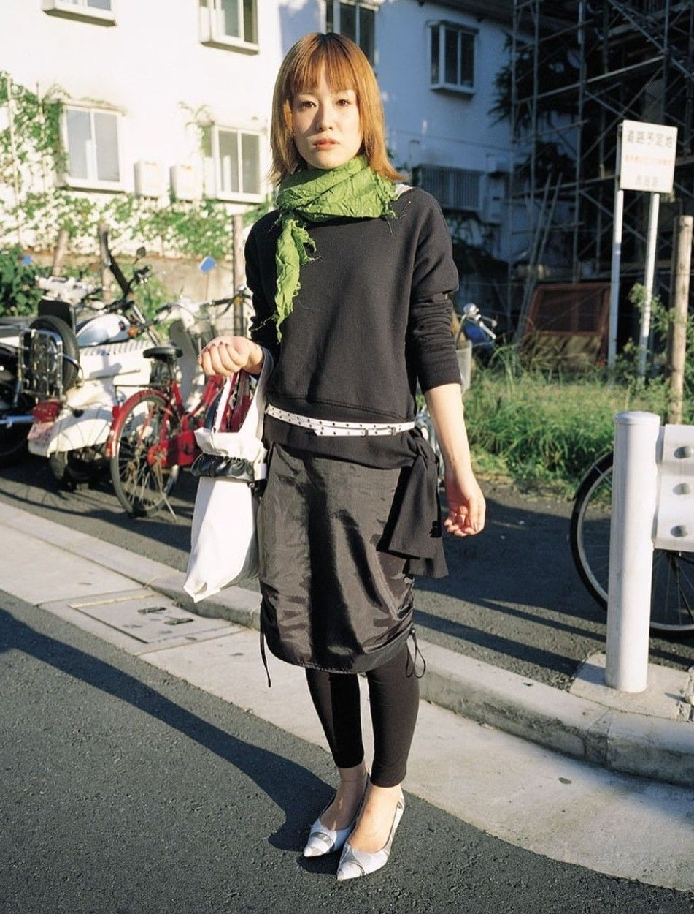
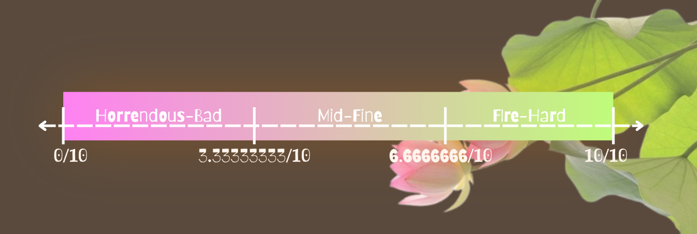
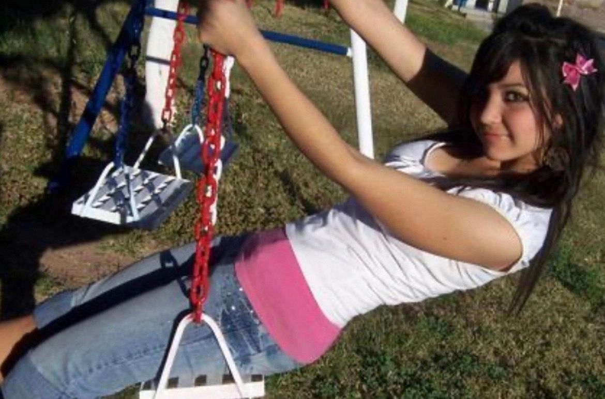
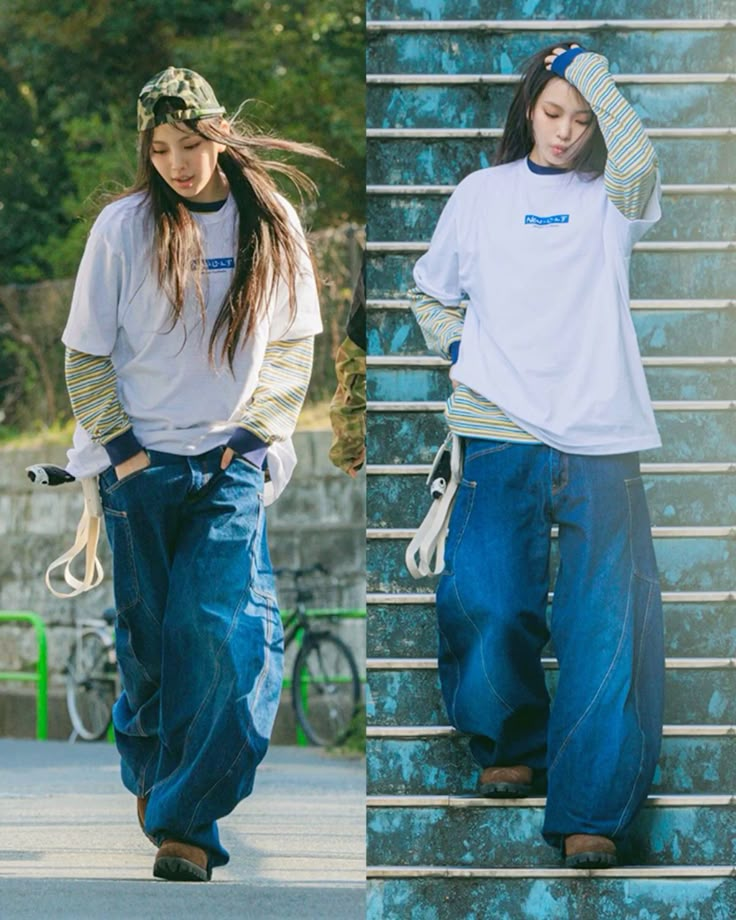

What is Fashion to me?
I know this is cliche asf, but fashion really is a way to express yourself. Personally, I hate it when people assume that everyone dresses to impress other people. I believe that most people dress for themselves more than for others, especially once they're reached a certain point in their style. "Negative energy" aside, I believe that it's possible for everyone to reach a point where they feel comfortable in choosing eactly what clothes to fit their style. It's a thing that can develop organically, like an instinct. I also wanted to mention--because I'm really proud of this--that I made the brown background wit the doilies ! (and also the little dashed twirly thing)
Hello! You've made it to the next paragraph. Your attention span is not as cooked. Because I am very utilitarian in a way, I like to have a certain formula to follow when I am creating outfits, and I also like to plan my outfits ahead for the week. On top of this, I have a collection of premade outfits that I can wear again based on the weather. Now that I type this out, it sounds really weird. But...I will remind myself that this is my website, so I can say stuff I want to. (not anything like hateful but ykwim)

Anyway... I have a lot of outfits archived that range from good to bad in my opinion. And so, I "devised" a scale which expresses how the outfits are rated. My categories are: comfort, confidence, and appearance. (pictured below)

Archived Outfits
I'm really exposing myself here... you can see that I am not fashionable every day. But it's fine ig... Anyways, you can see that this presentation is not only sort of a rough draft kinda thing, but also a different theme than this page...(this might change, you never know). Some lost media clothing pieces might appear here, but I've already or am planning to sell them.
Recommended Outfits
Here is my reccommended outfits section. This is a newer addition to my collection of slideshows. Basically how it works is every so often, I take outfits that fit into the "Fire-Hard" category and drop them in here. I also sometimes spend my free time making hypothetical outfits here (I know).


Inspirations
If you look through my outfits, you see that I like to layer, but not just any layering--tank tops! (idk why i made it sound so special) I love wearing outfits with certain amounts of layers because it creates more visual appeal for myself (and maybe others idk). The version of layering I like to do is very much inspired by people in the early 2000s. I know it's overplayed, but I just like the style (what can i say)...
For my second kind of inspo, I love a good big-shirt-under-big-sweater or big-undershirt-under-big-shirt moment. It doesn't work with big-sweater-under-big-shirt (trust me, ive tried and failed). I love how in modern trends, we have revived certain old trends, such as the baggy jean. To be honest, I wouldn't have even known about baggy jeans if it weren't for everyone suddenly wearing baggy jeans/pants. I forgot to mention that I also love baggy shorts as well. I may only have two pairs, but that's enough for me to be happy.
In general, I take inspiration mainly from people I meet, and also people in movies (like lily chou-chou). I also take inspiration from Pinterest, but that's probably obvious if you use it, and also because I have a page called "Favorite Sites".
As I've tried different silhouettes, I've realized that overall, I prefer either tight or baggy, and not very much in between. I think it's mainly due to the proportions of my body, because of my broad shoulders and generally boxy shape. Ever since I did a lil style study on Billie Eilish, I started to respect the baggy silhouette even more. Besides celebrities, I think it's nice to find people on places like insta or in magazines like FRUiTS (AGHHHH I LOVE THAT TYPING STYLE). Bonus points if you watch runways and find favorite designers. EVVEN MORE BONUS POINTS if you read Paradise Kiss or NANA or like a comic with fashion.
| Dress-Up!
Welcome to the virtual try-on room! I created this in order to visualize my outfits better. It’s always a work-in-progress, so expect changes! It took me a while to get the sizing close to right for each piece. The reason the proportions might be a little bit wonky is because I took the photos in batches across a few months/years. So, I hope you enjoy it. (It’s best played on a computer)
Also, feel free to style me in your style! I would love to see what people come up with while bein limited to a probably realistically-sized wardrobe. I have used screenshots of this in my personal fashion rules of thumb.